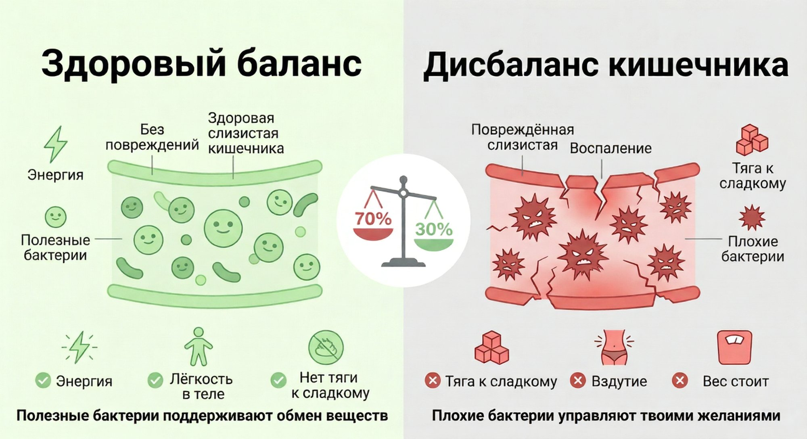
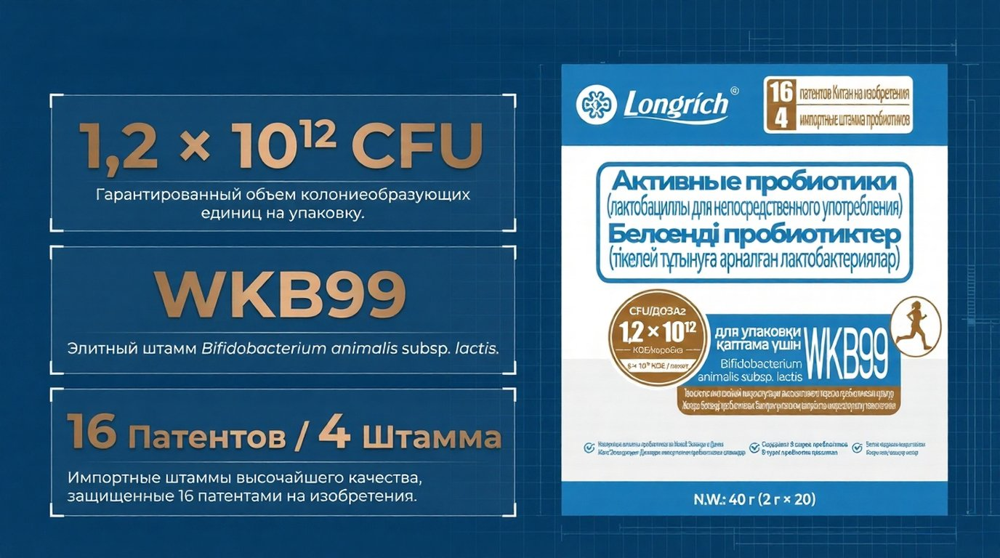
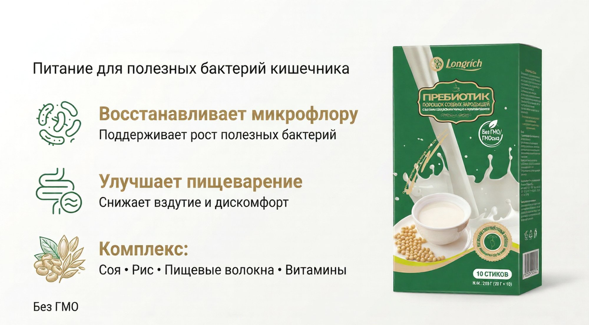

Без силы воли. Без срывов. Без готовки отдельно.
Я покажу, как запустить организм, чтобы он сам перестал требовать еду по вечерам.
Знакомо?
Это не ты слабая.
Вечерний срыв — это не твоя вина. Это жёсткий биохимический приказ твоего организма.
В твоём кишечнике живут патогенные бактерии. Они питаются сахаром. И когда им нужна еда — они посылают сигналы в мозг: "Корми нас! Срочно!"
Мозг думает, что тебе срочно нужна энергия. И ты идёшь к холодильнику.

Ты не виновата. Просто в твоём кишечнике дисбаланс. Плохих бактерий больше, чем хороших.
Я не села на диету. Я не стала считать калории. Я не стала терпеть голод.
Я просто восстановила баланс в кишечнике. И организм сам начал делать остальное.
Я начала этот курс 10 февраля 2026 года. Первые 5 дней ничего особенного не чувствовала.
На 7-й день я заметила первое изменение: ушла тяжесть после еды. Знаете это чувство, когда к вечеру живот как надутый шарик? Вот оно пропало. Появилась легкость.
Через 2 недели я поймала себя на мысли: я не думаю о еде постоянно. Раньше к 10 вечера всегда шла к холодильнику за порцией "успокоительного" в виде еды. Теперь — просто не хочется.
Что это значит для тебя:
→ Ты перестаёшь срываться вечером
→ Вес начинает уходить сам
→ Ты не живёшь в постоянной борьбе с собой

60 миллиардов живых бактерий в защитной микрокапсуле. Они вытесняют патогенную флору — тех самых «сахарных наркоманов», которые заставляли тебя переедать. Кишечник заживает, и вес наконец-то сдвигается с мёртвой точки.
Как пить: Высыпать пакетик в рот утром. Всё.

Кальций, витамины, цинк. Идеальная еда для полезных бактерий. Мягко блокирует голод.
Как пить: Развести в половине стакана тёплой воды. Готово.
Что происходит?
Полезные бактерии вырабатывают бутират — стоп-сигнал для мозга: "Мы сыты, прекрати поиск еды". Плюс кальций снимает вечернюю тревожность.
Уходит тяжесть в животе. Появляется забытое чувство лёгкости после еды. Больше не чувствуешь себя "надутым шариком" к вечеру.
Нормализуется стул. Резко снижается тяга к сладкому по вечерам. Ты просто перестаёшь думать о еде 24/7.
Видимое снижение объёмов. Одежда сидит свободнее. Энергия на весь день без кофе. Ты смотришь в зеркало — и видишь изменения.
Но чтобы «взломать» старые привычки окончательно, ты получаешь:
Больше не нужно готовить мужу отдельно, детям отдельно, а себе — «лист салата».
Отключаем вечернюю тягу к еде за 3 минуты.
Это про биохимию, не про силу воли. Блокировка сигнала голода.
"Я вечно всё бросаю на полпути. Куплю, попью два дня и забуду". Здесь эта схема сломается.
Ты покупаешь не просто пробиотик. Ты покупаешь систему неизбежного результата и мою дисциплину напрокат, пока твоя собственная не окрепнет.
Напиши мне в WhatsApp — я отвечу в течение часа и разберу твою ситуацию.
Написать в WhatsApp →